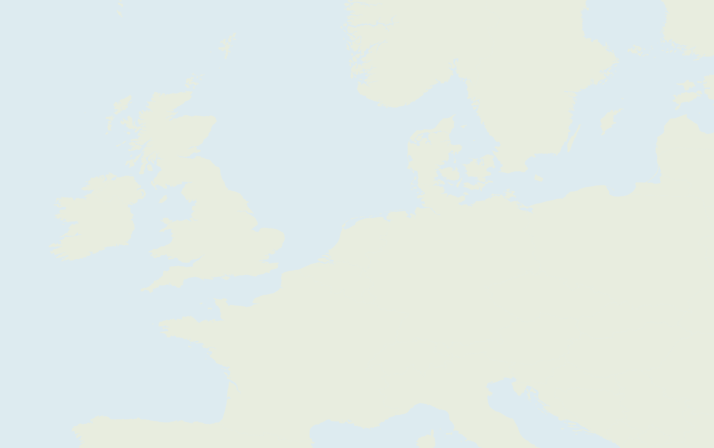
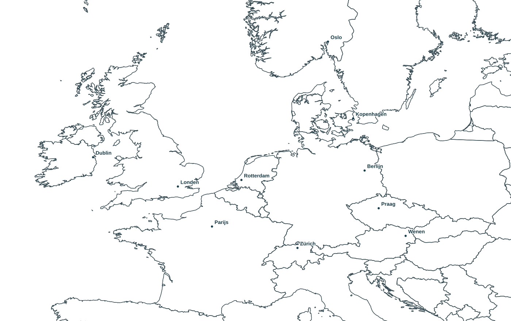

Midden-Europa in beeld
Weerlab · UKMO Global · Bracknell-fronten
Kaartset laden…


Weerlagen: ECMWF · 14 oktober 00 UTC
Fronten: Met Office / Bracknell · 12 UTC
Fronten: Met Office / Bracknell · 12 UTC
ED ALDUS · WEERLAB
Regen · mm/uur
0,10,52832+
Temperatuur · °C
−100102030
Sneeuw · mm water-equivalent/uur
0,050,10,20,512+
Wit: totale bewolking
0% 100% bedekking
Isobaren: elke 4 hPa · H / L: drukcentrum
━▲ Koufront ━● Warmtefront
━▲● Occlusie ━ Trog
Kruisjes in een front: verzwakkend front
Wind: cijfer in Bft · pijl wijst waarheen de wind waait
Rood: temperatuur op het kaarttijdstip · °C
Paars: maximumtemperatuur · MOSMIX · °C
0% 100% bedekking
Isobaren: elke 4 hPa · H / L: drukcentrum
━▲ Koufront ━● Warmtefront
━▲● Occlusie ━ Trog
Kruisjes in een front: verzwakkend front
Wind: cijfer in Bft · pijl wijst waarheen de wind waait
Rood: temperatuur op het kaarttijdstip · °C
Paars: maximumtemperatuur · MOSMIX · °C
Officiële frontenreferentie
Kaart en fronten gelden beide voor 12 UTC.
De gekleurde frontlijnen zijn voor deze demo handmatig overgenomen uit de bijbehorende Met Office-kaart en omgerekend naar de eigen kaartprojectie. Het is een vereenvoudigde interpretatie van de bronkaart. De frontenanalyse komt van het Met Office; de achtergrondvelden zijn van ECMWF. De twee modellen kunnen plaatselijk verschillen.
Bron: Met Office, via de bestaande Weerlab-guidance. Copyrightvermelding staat op de bronkaart.